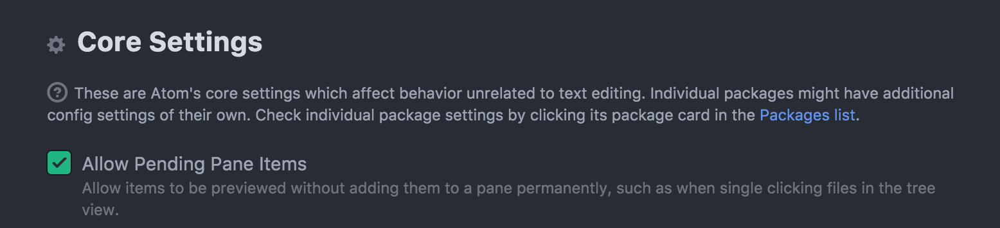

"Pending Pane Items" were formerly referred to as "Preview Tabs"
When you open a new file by single-clicking in the Tree View, it will open in a new tab with an italic title. This indicates that the file is "pending". When a file is pending, it will be replaced by the next pending file that is opened. This allows you to click through a bunch of files to find something without having to go back and close them all.
You can confirm a pending file by doing any of the following:
You can also open a file already confirmed by double-clicking it in the tree view instead of single-clicking it.

If you would prefer to not have files open in pending form, you can disable this behavior by unchecking "Allow Pending Pane Items" in the Core Settings section of the Settings View. With pending pane items disabled, single-clicking a file in the Tree View will select the file but not open it. You will have to double-click the file to open it.